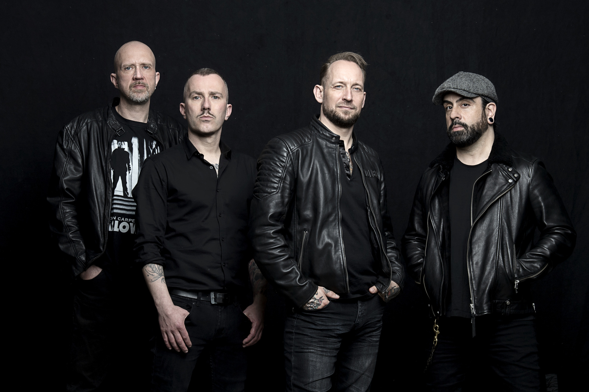

Stars in Graz
30.10.2021
Location: Messe Congress Graz
Schedule
- 17:00 - Bilderbuch

- 18:00 - Wanda

- 19:00 - Christina Stürmer

- 20:00 - Volbeat 
- 21:00 - Imagine Dragons

- 22:00 - Opus

Testimonials
The Stars in Graz Experience was nothing short of amazing. The joy from the stage was infectious. In all my years of booking concerts, none has caused a more emphatically enthusiastic response. It was off the charts!
- Bill Deasy
It’s a great music concert with a really nice crowd! Brilliant atmosphere and lots of happy faces, well done on a great event!
- Leonie Handl
Time stood still at last night's concert... Thanks so much! We had a fab time!
- Mark Lipman
Great music, great crowd, great atmosphere! I'll be back next year!
- Elisa Haas
FAQ
What is Stars in Graz?
Stars in Graz is a one-day music concert where many different artists perform their most popular songs. It takes place once a year since 2015.
When does Stars in Graz take place?
On 30.10.2021. The first act starts at 17:00.
What is the age minimum?
Persons under 16 years of age are not allowed to enter without the accompaniment of an adult.
Can I pay by credit card?
Yes, credit cards can be used at all food stands.
What is the golden circle?
In the Golden Circle, you experience your favorite act as close as possible. It is located directly in front of the stage. Show your Golden Circle ticket and you'll get to this area quickly and easily thanks to a separate entrance.
Are there wheelchair spaces?
Of course, wheelchair spaces are available. However, spaces are limited. Please contact us in advance for more information.
Can I resale my ticket if I cannot go?
The resale of the tickets is prohibited. For security reasons, we also strongly advise against buying the tickets from anyone. Anyone who tries to gain access to the event with copied or forged tickets will be suspected of ticket misuse and prosecuted.